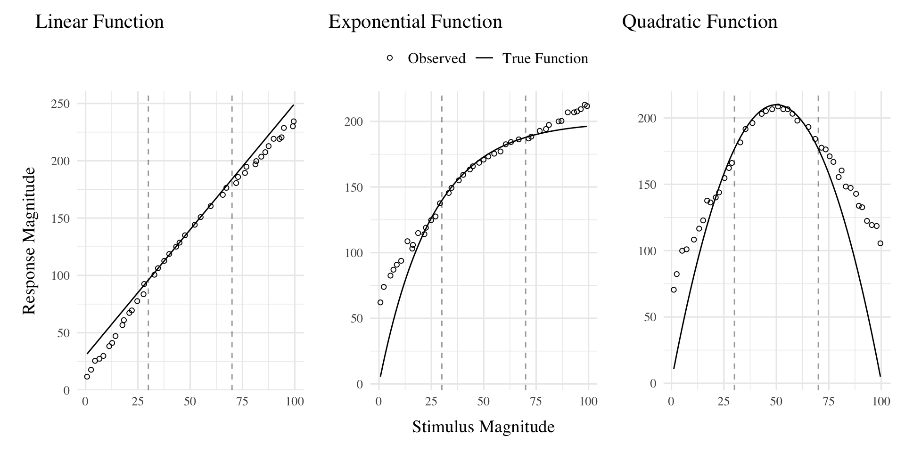

Working Draft of HTW Manuscript
Introduction
A longstanding issue across both science and instruction has been to understand how various aspects of an educational curriculum or training program influence learning acquisition and generalization. One such aspect, which has received a great deal of research attention, is the variability of examples experienced during training (Raviv et al., 2022). The influence of training variation has been studied in numerous domains, including category learning (Cohen et al., 2001; Posner & Keele, 1968), visuomotor learning (Berniker et al., 2014 ; Schmidt, 1975), language learning (Perry et al., 2010), and education (Braithwaite & Goldstone, 2015; Guo et al., 2014). The pattern of results is complex, with numerous studies finding both beneficial (Braun et al., 2009; Catalano & Kleiner, 1984; Roller et al., 2001), as well as null or negative effects (Brekelmans et al., 2022 ; Hu & Nosofsky, 2024; Van Rossum, 1990). The present study seeks to contribute to the large body of existing research by examining the influence of variability in visuomotor function learning - a domain in which it has been relatively under-studied.
Function Learning and Extrapolation
The study of human function learning investigates how people learn relationships between continuous input and output values. Function learning is studied both in tasks where individuals are exposed to a sequence of input/output pairs (DeLosh et al., 1997; McDaniel et al., 2013), or situations where observers are presented with a an incomplete scatterplot or line graph and make predictions about regions of the plot that don’t contain data (Ciccione & Dehaene, 2021; Courrieu, 2012; Said & Fischer, 2021; Schulz et al., 2020).
Carroll (1963) conducted the earliest work on function learning. Input stimuli and output responses were both lines of varying length. The correct output response was related to the length of the input line by a linear, quadratic, or random function. Participants in the linear and quadratic performed above chance levels during extrapolation testing, with those in the linear condition performing the best overall. Carroll argued that these results were best explained by a ruled based model wherein learners form an abstract representation of the underlying function. Subsequent work by Brehmer (1974),testing a wider array of functional forms, provided further evidence for superior extrapolation in tasks with linear functions. Brehmer argued that individuals start out with an assumption of a linear function, but given sufficient error will progressively test alternative hypothesis with polynomials of greater degree. Koh & Meyer (1991) employed a visuomotor function learning task, wherein participants were trained on examples from an unknown function relating the length of an input line to the duration of a response (time between keystrokes). In this domain, participants performed best when the relation between line length and response duration was determined by a power, as opposed to linear function. Koh & Meyer developed the log-polynomial adaptive-regression model to account for their results.
The first significant challenge to the rule-based accounts of function learning was put forth by DeLosh et al. (1997) . In their task, participants learned to associate stimulus magnitudes with response magnitudes that were related via either linear, exponential, or quadratic function. Participants approached ceiling performance by the end of training in each function condition, and were able to correctly respond in interpolation testing trials. All three conditions demonstrated some capacity for extrapolation, however participants in the linear condition tended to underestimate the true function, while exponential and quadratic participants reliably overestimated the true function on extrapolation trials. Extrapolation and interpolation performance are depicted in Figure 1.
The authors evaluated both of the rule-based models introduced in earlier research (with some modifications enabling trial-by-trial learning). The polynomial hypothesis testing model (Brehmer, 1974; Carroll, 1963) tended to mimic the true function closely in extrapolation, and thus offered a poor account of the human data. The log-polynomial adaptive regression model (Koh & Meyer, 1991) was able to mimic some of the systematic deviations produced by human subjects, but also predicted overestimation in cases where underestimation occurred.
The authors also introduced two new function-learning models. The Associative Learning Model (ALM) and the extrapolation-association model (EXAM). ALM is a two layer connectionist model adapted from the ALCOVE model in the category learning literature (Kruschke, 1992). ALM belongs to the general class of radial-basis function neural networks, and can be considered a similarity-based model in the sense that the nodes in the input layer of the network are activated as a function of distance. The EXAM model retains the same similarity based activation and associative learning mechanisms as ALM, while being augmented with a linear rule response mechanism. When presented with novel stimuli, EXAM will retrieve the most similar input-output examples encountered during training, and from those examples compute a local slope. ALM was able to provide a good account of participant training and interpolation data in all three function conditions, however it was unable to extrapolate. EXAM, on the other hand, was able to reproduce both the extrapolation underestimation, as well as the quadratic and exponential overestimation patterns exhibited by the human participants. Subsequent research identified some limitations in EXAM’s ability to account for cases where human participants learn and extrapolate sinusoidal function Bott & Heit (2004) or to scenarios where different functions apply to different regions of the input space Kalish et al. (2004), though EXAM has been shown to provide a good account of human learning and extrapolation in tasks with bi-linear, V shaped input spaces Mcdaniel et al. (2009).
Variability and Function Learning
The influence of variability on function learning tasks has received relatively little attention. The study by DeLosh et al. (1997) (described in detail above) did include a variability manipulation (referred to as density in their paper), wherein participants were trained with either either 8, 20, or 50 unique input-output pairs, with the total number of training trials held constant. They found a minimal influence of variability on training performance, and no difference between groups in interpolation or extrapolation, with all three variability conditions displaying accurate interpolation, and linearly biased extrapolation that was well accounted for by the EXAM model.
In the domain of visuomotor learning, van Dam & Ernst (2015) employed a task which required participants to learn a linear function between the spikiness of shape stimuli and the correct horizontal position to make a rapid pointing response. The shapes ranged from very spiky to completely circular at the extreme ends of the space. Participants trained with intermediate shapes from a lower variation (2 shapes) or higher variation (5 shapes) condition, with the 2 items of the lower varied condition matching the items used on the extreme ends of the higher variation training space. Learning was significantly slower in the higher variation group. However, the two conditions did not differ when tested with novel shapes, with both groups producing extrapolation responses of comparable magnitudes to the most similar training item, rather than in accordance with the true linear function. The authors accounted for both learning and extrapolation performance with a Bayesian learning model. Similar to ALM, the bayesian model assumes that generalization occurs as a Gaussian function of the distance between stimuli. However unlike ALM, the bayesian learning model utilizes more elaborate probabilistic stimulus representations, with a separate Kalman Filter for each shape stimulus.
Overview Of Present Study
The present study investigates the influence of training variability on learning, generalization, and extrapolation in a uni-dimensional visuomotor function learning task. To the best of our knowledge, this research is the first to employ the classic constant vs. varied training manipulation, commonly used in the literature on the benefits of variability, in the context of a uni-dimensional function learning task. Across three experiments, we compare constant and varied training conditions in terms of learning performance, extrapolation accuracy, and the ability to reliably discriminate between stimuli.
To account for the empirical results, we will apply a series of computational models, including the Associative Learning Model (ALM) and the Extrapolation-Association Model (EXAM). Notably, this study is the first to employ approximate Bayesian computation (ABC) to fit these models to individual subject data, enabling us to thoroughly investigate the full range of posterior predictions of each model, and to examine the the ability of these influential models of function learning to account for both the group level and individual level data.
References
Berniker, M., Mirzaei, H., & Kording, K. P. (2014). The effects of training breadth on motor generalization. Journal of Neurophysiology, 112(11), 2791–2798. https://doi.org/10.1152/jn.00615.2013
Bott, L., & Heit, E. (2004). Nonmonotonic Extrapolation in Function Learning. Journal of Experimental Psychology: Learning, Memory, and Cognition, 30(1), 38–50. https://doi.org/10.1037/0278-7393.30.1.38
Braithwaite, D. W., & Goldstone, R. L. (2015). Effects of Variation and Prior Knowledge on Abstract Concept Learning. Cognition and Instruction, 33(3), 226–256. https://doi.org/10.1080/07370008.2015.1067215
Braun, D. A., Aertsen, A., Wolpert, D. M., & Mehring, C. (2009). Motor Task Variation Induces Structural Learning. Current Biology, 19(4), 352–357. https://doi.org/10.1016/j.cub.2009.01.036
Brehmer, B. (1974). Hypotheses about relations between scaled variables in the learning of probabilistic inference tasks. Organizational Behavior and Human Performance, 11(1), 1–27. https://doi.org/10.1016/0030-5073(74)90002-6
Brekelmans, G., Lavan, N., Saito, H., Clayards, M., & Wonnacott, E. (2022). Does high variability training improve the learning of non-native phoneme contrasts over low variability training? A replication. Journal of Memory and Language, 126, 104352. https://doi.org/10.1016/j.jml.2022.104352
Carroll, J. D. (1963). Functional Learning: The Learning of Continuous Functional Mappings Relating Stimulus and Response Continua. ETS Research Bulletin Series, 1963(2), i–144. https://doi.org/10.1002/j.2333-8504.1963.tb00958.x
Catalano, J. F., & Kleiner, B. M. (1984). Distant Transfer in Coincident Timing as a Function of Variability of Practice. Perceptual and Motor Skills, 58(3), 851–856. https://doi.org/10.2466/pms.1984.58.3.851
Ciccione, L., & Dehaene, S. (2021). Can humans perform mental regression on a graph? Accuracy and bias in the perception of scatterplots. Cognitive Psychology, 128, 101406. https://doi.org/10.1016/j.cogpsych.2021.101406
Cohen, A. L., Nosofsky, R. M., & Zaki, S. R. (2001). Category variability, exemplar similarity, and perceptual classification. Memory & Cognition, 29(8), 1165–1175. https://doi.org/10.3758/BF03206386
Courrieu, P. (2012). Quick approximation of bivariate functions. British Journal of Mathematical and Statistical Psychology, 65(1), 89–121. https://doi.org/10.1111/j.2044-8317.2011.02016.x
DeLosh, E. L., McDaniel, M. A., & Busemeyer, J. R. (1997). Extrapolation: The Sine Qua Non for Abstraction in Function Learning. Journal of Experimental Psychology: Learning, Memory, and Cognition, 23(4), 19. https://doi.org/10.1037/0278-7393.23.4.968
Guo, J.-P., Yang, L.-Y., & Ding, Y. (2014). Effects of example variability and prior knowledge in how students learn to solve equations. European Journal of Psychology of Education, 29(1), 21–42. https://www.jstor.org/stable/43551124
Hu, M., & Nosofsky, R. M. (2024). High-variability training does not enhance generalization in the prototype-distortion paradigm. Memory & Cognition, 1–16. https://doi.org/10.3758/s13421-023-01516-1
Kalish, M. L., Lewandowsky, S., & Kruschke, J. K. (2004). Population of Linear Experts: Knowledge Partitioning and Function Learning. Psychological Review, 111(4), 1072–1099. https://doi.org/10.1037/0033-295X.111.4.1072
Koh, K., & Meyer, D. E. (1991). Function learning: Induction of continuous stimulus-response relations. Journal of Experimental Psychology: Learning, Memory, and Cognition, 17(5), 811. https://doi.org/10.1037/0278-7393.17.5.811
Kruschke, J. K. (1992). ALCOVE: An exemplar-based connectionist model of Category Learning. Psychological Review, 99(1). https://doi.org/10.1037/0033-295X.99.1.22
Mcdaniel, M. A., Dimperio, E., Griego, J. A., & Busemeyer, J. R. (2009). Predicting transfer performance: A comparison of competing function learning models. Journal of Experimental Psychology. Learning, Memory, and Cognition, 35, 173–195. https://doi.org/10.1037/a0013982
McDaniel, M. A., Fadler, C. L., & Pashler, H. (2013). Effects of spaced versus massed training in function learning. Journal of Experimental Psychology: Learning, Memory, and Cognition, 39(5), 1417–1432. https://doi.org/10.1037/a0032184
Perry, L. K., Samuelson, L. K., Malloy, L. M., & Schiffer, R. N. (2010). Learn Locally, Think Globally: Exemplar Variability Supports Higher-Order Generalization and Word Learning. Psychological Science, 21(12), 1894–1902. https://doi.org/10.1177/0956797610389189
Posner, M. I., & Keele, S. W. (1968). On the genesis of abstract ideas. Journal of Experimental Psychology, 77(3), 353–363. https://doi.org/10.1037/h0025953
Raviv, L., Lupyan, G., & Green, S. C. (2022). How variability shapes learning and generalization. Trends in Cognitive Sciences, S1364661322000651. https://doi.org/10.1016/j.tics.2022.03.007
Roller, C. A., Cohen, H. S., Kimball, K. T., & Bloomberg, J. J. (2001). Variable practice with lenses improves visuo-motor plasticity. Cognitive Brain Research, 12(2), 341–352. https://doi.org/10.1016/S0926-6410(01)00077-5
Said, N., & Fischer, H. (2021). Extrapolation accuracy underestimates rule learning: Evidence from the function-learning paradigm. Acta Psychologica, 218, 103356. https://doi.org/10.1016/j.actpsy.2021.103356
Schmidt, R. A. (1975). A schema theory of discrete motor skill learning. Psychological Review, 82(4), 225–260. https://doi.org/10.1037/h0076770
Schulz, E., Quiroga, F., & Gershman, S. J. (2020). Communicating Compositional Patterns. Open Mind, 4, 25–39. https://doi.org/10.1162/opmi_a_00032
van Dam, L. C. J., & Ernst, M. O. (2015). Mapping Shape to Visuomotor Mapping: Learning and Generalisation of Sensorimotor Behaviour Based on Contextual Information. PLOS Computational Biology, 11(3), e1004172. https://doi.org/10.1371/journal.pcbi.1004172
Van Rossum, J. H. A. (1990). Schmidt’s schema theory: The empirical base of the variability of practice hypothesis. Human Movement Science, 9(3-5), 387–435. https://doi.org/10.1016/0167-9457(90)90010-B